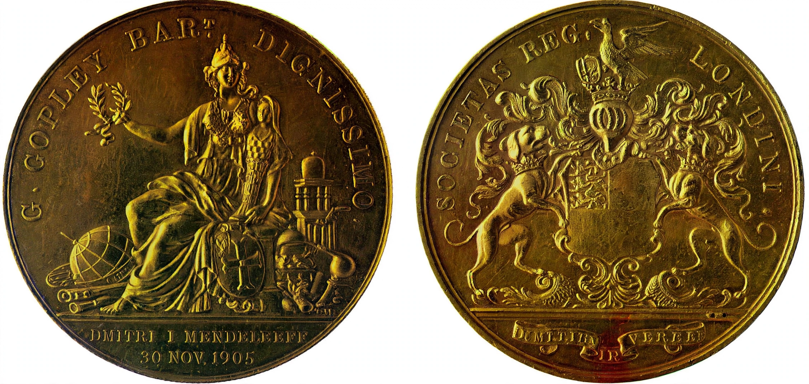

Reconocimientos de Benjamin Franklin
Honores y Distinciones
A lo largo de su vida y de manera póstuma, Benjamín Franklin recibió los más altos honores del mundo científico y académico. En 1753, la Real Sociedad de Londres le otorgó la prestigiosa Medalla Copley por sus revolucionarios experimentos con la electricidad, el equivalente al Premio Nobel de la época. Además, recibió doctorados honoris causa de las prestigiosas universidades de Harvard, Yale, Oxford y San Andrés, ganándose el respetuoso título de "Doctor Franklin". Su impacto fue tan grande que numerosas instituciones y academias continuaron rindiéndole tributo tras su fallecimiento, consolidándolo como una de las mentes más admiradas globalmente.
Como testimonio de su trascendencia, en la parte inferior se pueden apreciar dos piezas numismáticas fundamentales de su historia. A la izquierda se exhibe la réplica oficial del galardón científico que reconoce sus aportaciones experimentales en física. A la derecha se presenta una valiosa medalla acuñada en su honor tras su muerte, la cual plasma su icónico retrato de perfil como un recordatorio permanente de su inmenso legado para la humanidad.
